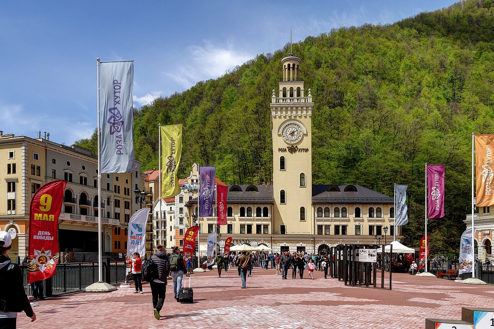
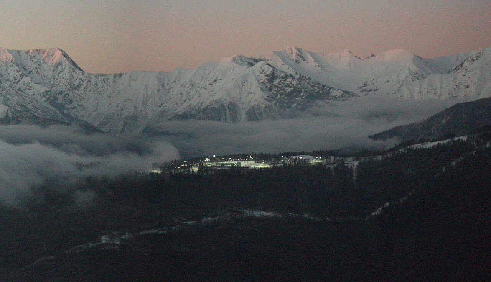
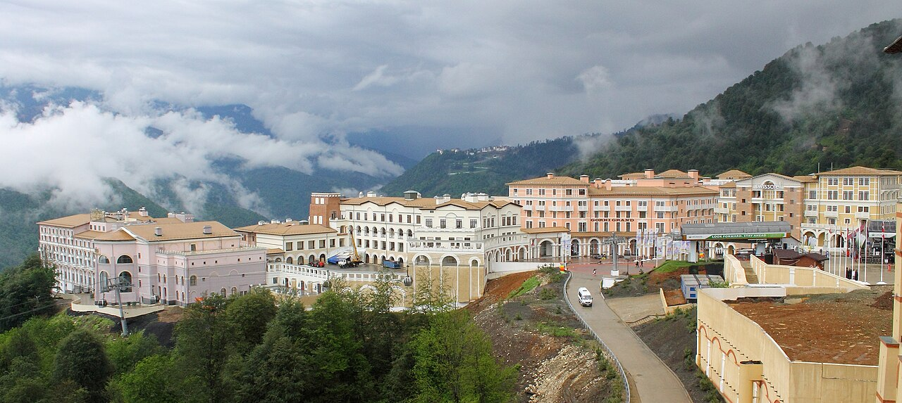
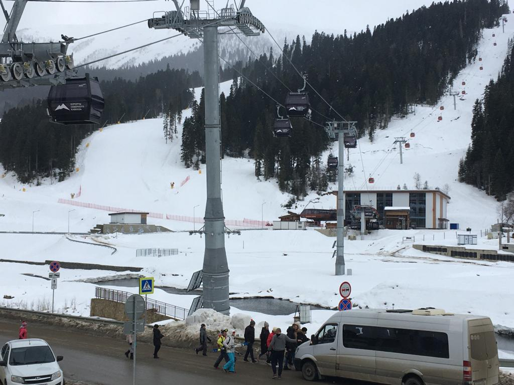
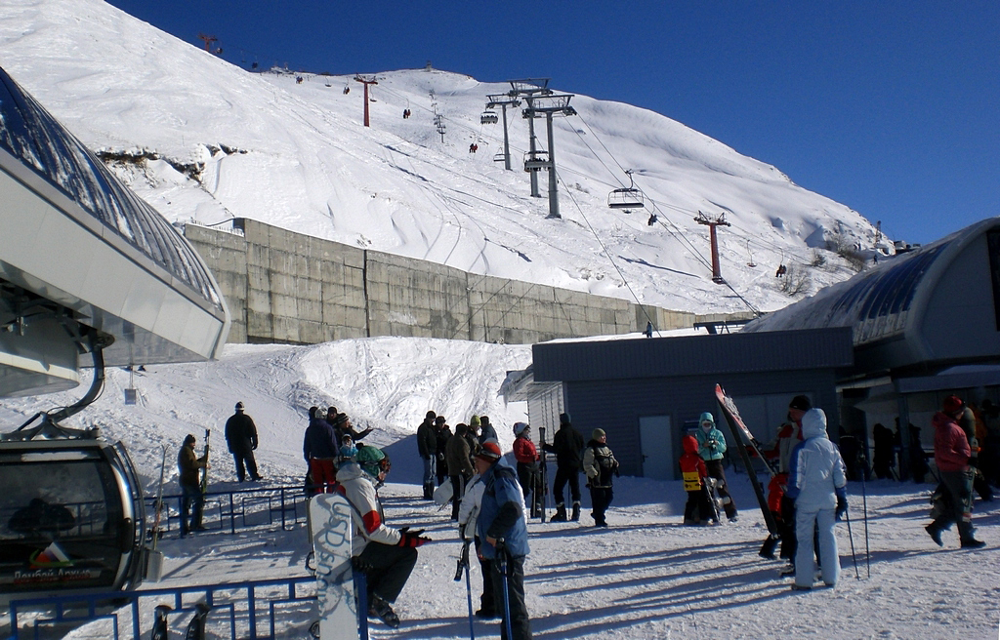
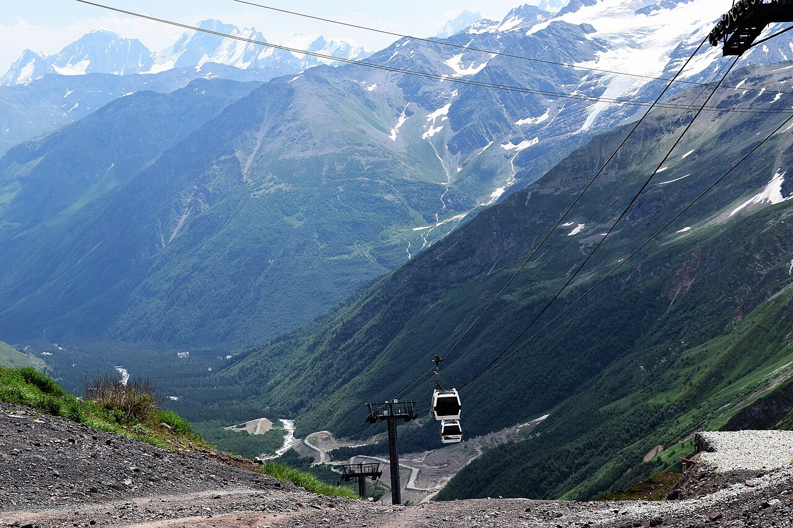
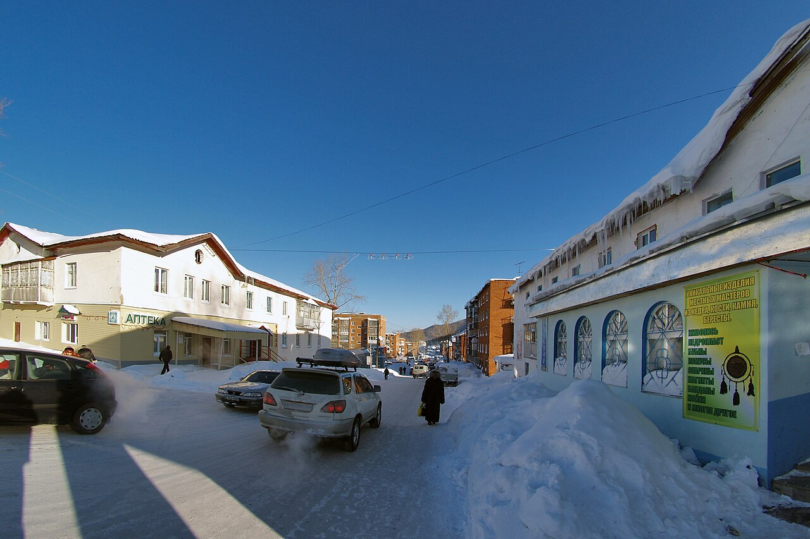
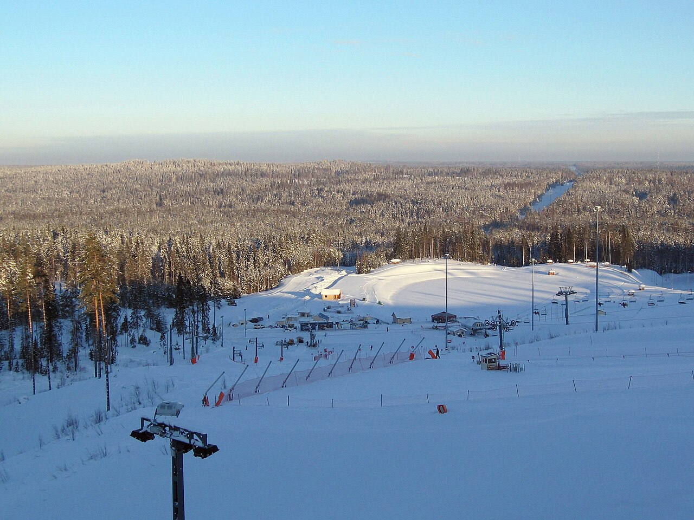

Восемь курортов, на которые можно поехать из Ростова-на-Дону: от Кавказа,
до которого полдня на машине, до Сибири и Ленинградской области. По каждому
курорту — короткий рассказ и главное, что нужно знать перед поездкой:
сезон, цены на ски-пасс, трассы, перепад высот и подъёмники.
Роза Хутор
Сочи, Красная Поляна · ≈ 700 км от Ростова

Роза Хутор — самый большой курорт Красной Поляны
Роза Хутор — крупнейший горнолыжный курорт страны и одна из олимпийских
площадок 2014 года. Здесь проходили соревнования по горным лыжам и сноуборду,
поэтому трассы рассчитаны на любой уровень: от широких зелёных склонов
на Розовой долине до крутых чёрных спусков с вершины Роза Пик.
Внизу у реки Мзымта стоит курортный посёлок с набережной, отелями и
ресторанами, так что после катания есть чем заняться. Из Ростова удобнее
всего лететь самолётом до Сочи, а дальше ехать на «Ласточке» или автобусе
до Красной Поляны.
Сезон
середина декабря — апрель
Ски-пасс на день
от ≈ 3 500 ₽
Трассы
≈ 100 км
Высоты
560 – 2320 м
Подъёмники
≈ 30
Акция сезона 2026/27: цены на ски-пассы оставлены на уровне прошлого сезона,
многодневные ски-пассы с открытой датой (от 2 до 7 дней) — со скидкой до 35%.
Газпром
Сочи, Красная Поляна · ≈ 700 км от Ростова

Сектор «Лаура» на хребте Псехако вечером
Курорт «Газпром» состоит из двух секторов — «Лаура» и «Альпика». Его выбирают
семьи с детьми и те, кто только учится кататься: трассы здесь в основном
синие и красные, хорошо подготовлены и не так загружены, как на соседних
курортах. На территории есть горнолыжная школа, прокат и несколько отелей
прямо у подъёмников.
Сектор «Лаура» находится в живописной долине, а «Альпика» поднимается выше,
откуда открываются виды на Главный Кавказский хребет.
Сезон
декабрь — апрель
Ски-пасс на день
от ≈ 3 000 ₽
Трассы
≈ 40 км
Высоты
540 – 2250 м
Подъёмники
≈ 20
Особенность: спокойные широкие трассы — хороший выбор для первой поездки.
Красная Поляна
Сочи, Эсто-Садок · ≈ 700 км от Ростова

Курортный городок у подножия хребта Аибга
Курорт «Красная Поляна» (раньше его называли «Горки Город» и «Горная карусель»)
стоит на склоне хребта Аибга. Он любим опытными лыжниками: здесь много
крутых трасс и хорошие возможности для фрирайда. Внизу расположен
современный городок с отелями, торговым центром и аквапарком.
Курорт удобно совмещать с Роза Хутор и «Газпромом»: все три находятся
рядом и связаны дорогами и общественным транспортом.
Сезон
декабрь — апрель
Ски-пасс на день
от ≈ 3 000 ₽
Трассы
≈ 30 км
Высоты
540 – 2300 м
Подъёмники
≈ 15
Особенность: сложные трассы и фрирайд для тех, кто уже уверенно стоит на лыжах.
Архыз
Карачаево-Черкесия · ≈ 650 км от Ростова

Канатная дорога курорта Архыз
Архыз — молодой и быстро растущий курорт, до которого из Ростова можно
доехать на машине за один день. Снег здесь лежит долго, солнечных дней
много, а цены заметно ниже, чем в Сочи. Трассы в основном средней
сложности, поэтому Архыз подходит и новичкам, и тем, кто катается
на выходных.
Жильё находится прямо у склона в посёлке Романтик, а вокруг — заповедные
леса и горы Карачаево-Черкесии.
Сезон
декабрь — апрель
Ски-пасс на день
от ≈ 2 000 ₽
Трассы
≈ 30 км
Высоты
1650 – 3100 м
Подъёмники
≈ 8
Особенность: ближайший к Ростову крупный курорт — можно поехать своим ходом.
Домбай
Карачаево-Черкесия · ≈ 600 км от Ростова

Канатная дорога Домбая на фоне Кавказских гор
Домбай — один из самых старых горнолыжных курортов страны, на котором
катались ещё в советское время. Посёлок окружён острыми вершинами
Кавказа, и многие называют местные виды самыми красивыми в России.
Трассы спускаются с горы Мусса-Ачитара, есть и длинные спуски,
и участки для фрирайда.
Подъёмники здесь принадлежат разным владельцам, поэтому раньше приходилось
платить за каждую канатку отдельно; перед поездкой стоит уточнить, какой
ски-пасс действует в этом сезоне.
Сезон
декабрь — апрель
Ски-пасс на день
от ≈ 2 500 ₽
Трассы
≈ 25 км
Высоты
1600 – 3170 м
Подъёмники
≈ 15
Особенность: самые эффектные горные пейзажи и атмосфера классического курорта.
Эльбрус
Кабардино-Балкария, Приэльбрусье · ≈ 750 км от Ростова

Канатная дорога на склоне Эльбруса
Эльбрус — самая высокая гора России и Европы, и катание здесь самое
высокогорное в стране: верхняя станция подъёмника находится почти
на высоте 3850 метров. Благодаря высоте снег держится до мая,
а весной можно кататься под ярким солнцем.
Рядом с Эльбрусом находится гора Чегет со сложными и длинными трассами.
В разреженном воздухе устаёшь быстрее, поэтому первый день лучше
провести спокойно и привыкнуть к высоте.
Сезон
декабрь — май
Ски-пасс на день
от ≈ 2 500 ₽
Трассы
≈ 20 км
Высоты
2350 – 3850 м
Подъёмники
≈ 6
Акция: в сезоне 2025/26 действовал единый ски-пасс на курорты «Эльбрус»,
«Мамисон» и «Ведучи» (12 000 ₽ для взрослых); условия нового сезона
уточняйте на сайте курорта.
Шерегеш
Кемеровская область, Горная Шория · ≈ 4 300 км от Ростова

Заснеженные склоны горы Зелёная в Шерегеше
Шерегеш — главный курорт Сибири и место, куда едут за лучшим снегом
в стране. Пушистый сухой снег лежит на склонах горы Зелёная с ноября
до мая, а деревья покрываются толстым слоем инея. Сюда приезжают
фрирайдеры со всей России.
Из Ростова путь неблизкий: самолётом до Новокузнецка с пересадкой и ещё
около трёх часов на автобусе. Зато сезон самый длинный, и в апреле здесь
всё ещё настоящая зима.
Сезон
ноябрь — май
Ски-пасс на день
от ≈ 2 000 ₽
Трассы
≈ 20 трасс
Высоты
570 – 1270 м
Подъёмники
≈ 20
Особенность: самый длинный сезон и лучший пухляк для фрирайда.
Игора
Ленинградская область · ≈ 1 900 км от Ростова

Учебные и основные склоны Игоры
Игора — самый известный курорт Ленинградской области, примерно в часе
езды от Санкт-Петербурга. Горы здесь невысокие, поэтому курорт подходит
для выходных, обучения и катания с детьми. Трассы хорошо освещены,
и можно кататься вечером после работы или учёбы.
Для ростовчанина Игора — вариант, если вы оказались в Петербурге зимой
и хотите встать на лыжи на день-два, не уезжая далеко от города.
Сезон
декабрь — март
Ски-пасс на день
от ≈ 2 500 ₽
Трассы
9 трасс
Перепад высот
≈ 120 м
Подъёмники
≈ 8
Особенность: вечернее катание при освещении, рядом с Петербургом.
Данные ориентировочные (по информации курортов и СМИ на ноябрь 2026 года).
Точные даты сезона и цены проверяйте на официальных сайтах курортов перед поездкой.